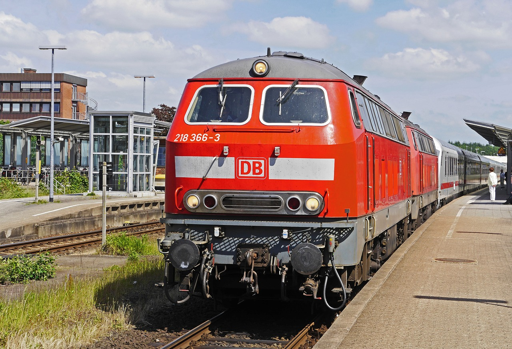
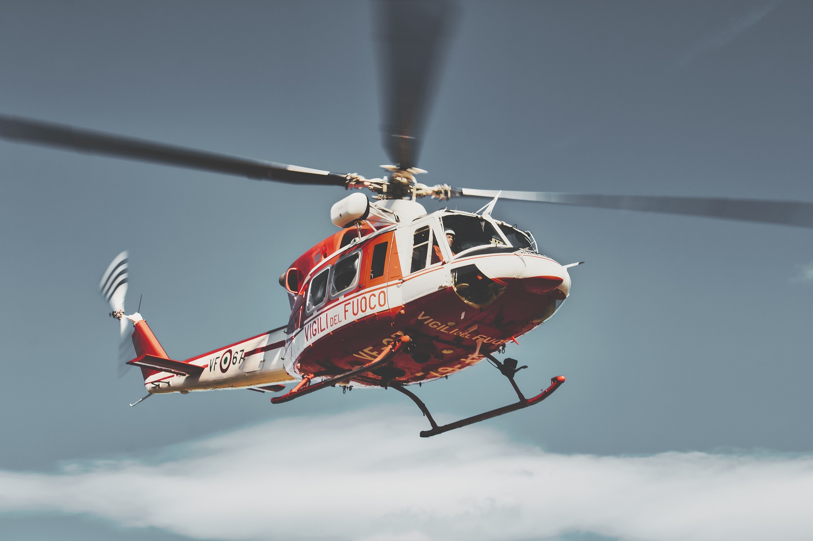
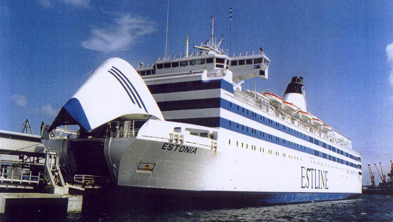
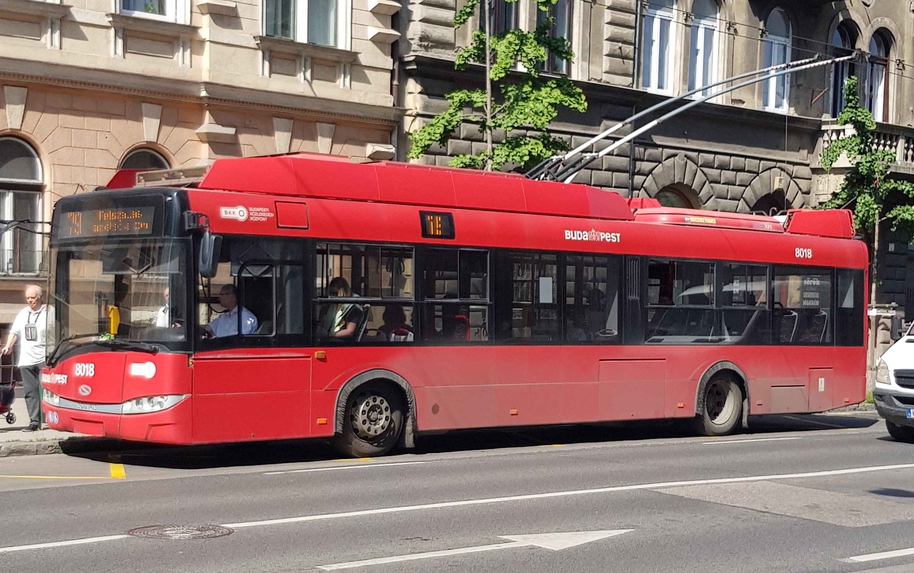
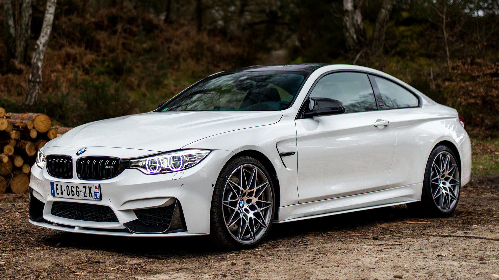
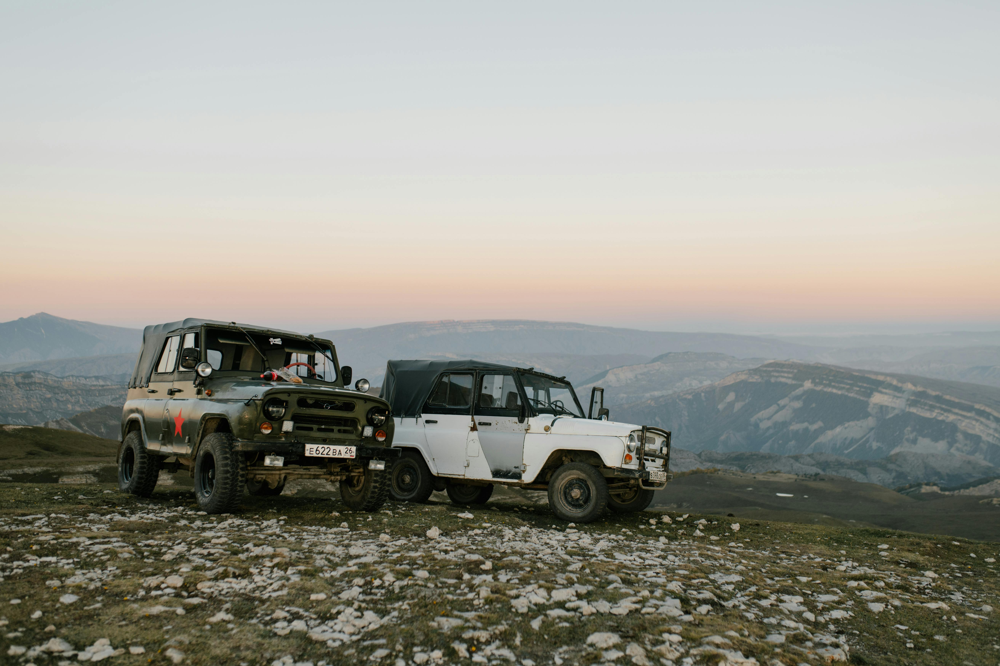
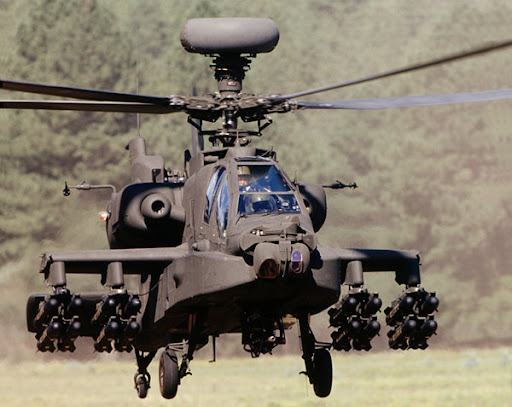
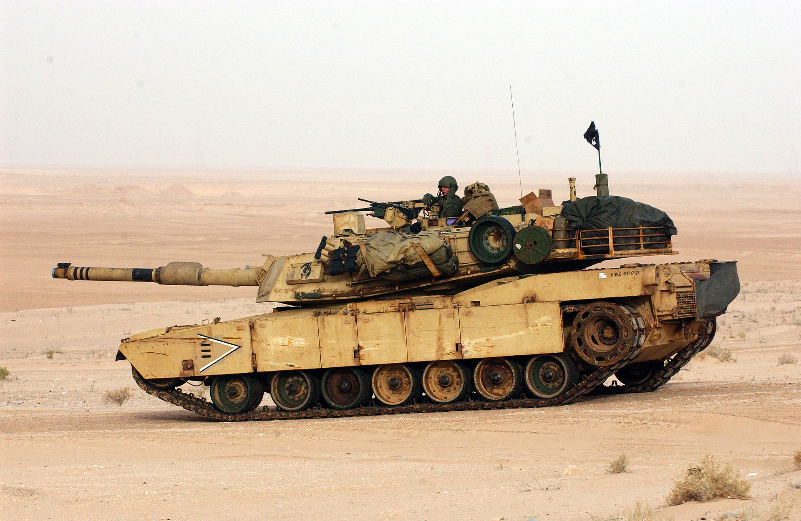
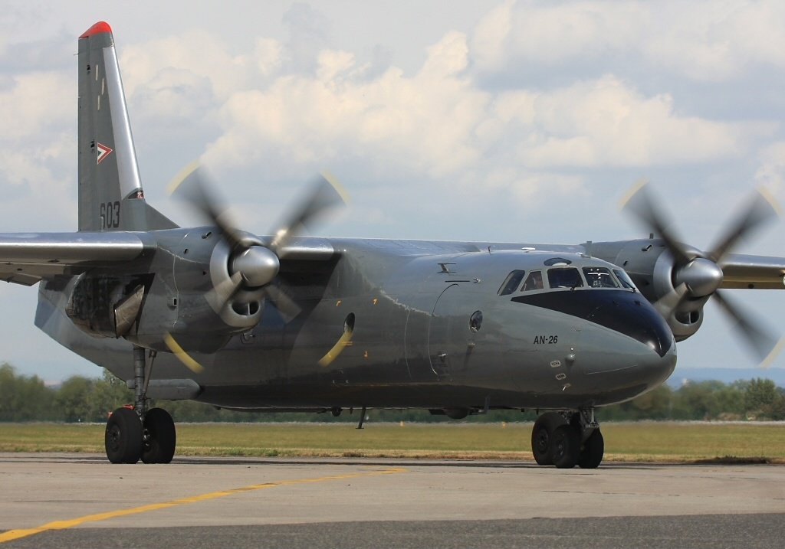

Kántor Alexa
Sínen közlekedő járművek

Pozsgai Bence
Civil Helikopterek

Vermes Máté
Civil hajók
Czokó Noel Attila
Civil repülőgépek

Takács Kristóf
Teherautók

Nagy Bence Gábor
Trolibuszok
_underway_at_sea,_circa_in_the_1970s.jpg "Civil Tengeralattjárók")
Gulyás Petra Patrícia
Civil Tengeralattjárók

Elek Bence
Személyautók

Sasvári Gábor
Katonai Tengeralattjárók

Markotai Zsolt
Katonai autók
Kövér Marcell
Katonai drónok

Kovács András Miklós
Katonai helikopterek

Bardi Tamás Patrik
Katonai lánctalpas járművek

Reszler Béla Bendegúz
Katonai hajók

Pásztor Ferenc Milán
Katonai lopakodók

Dobai Dániel
Katonai reüpülők